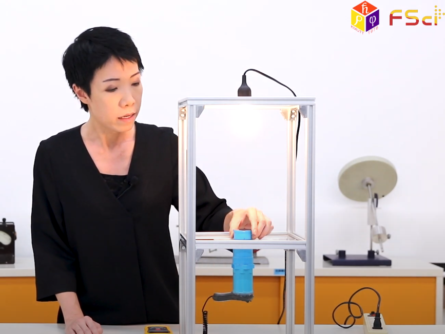
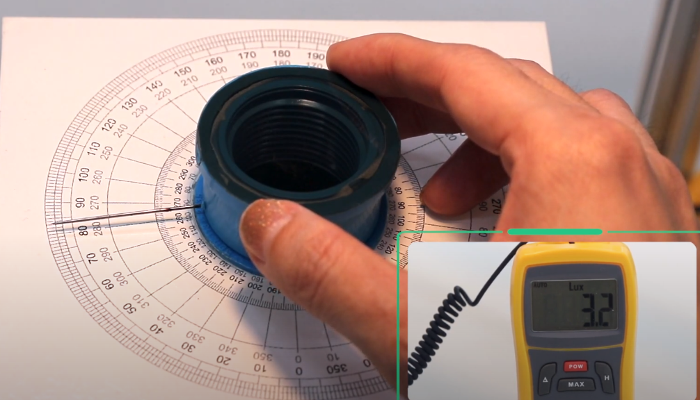
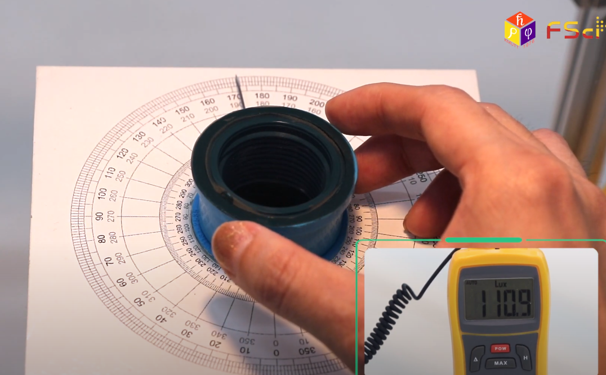
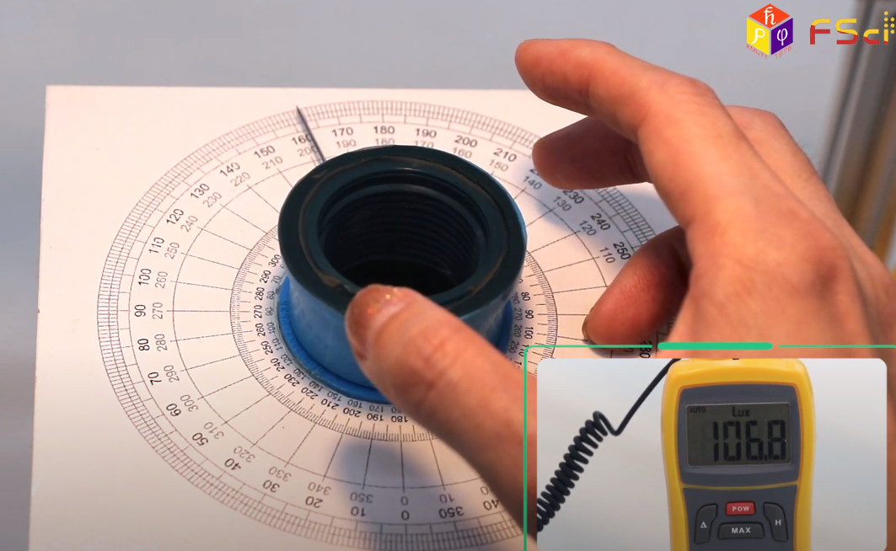
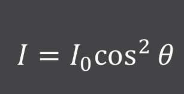
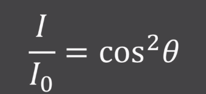
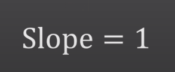
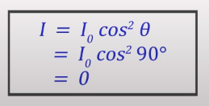

ขั้นตอนในการทดลอง
ตอนที่1 เปิดแหล่งกำเนิดแสงและปรับองศาไปให้มีค่าน้อยที่สุด แล้วบันทึกค่า


ตอนที่2 ปรับองศาไปให้มีค่า LUX มากที่สุดแล้วบันทึกค่า

ตอนที่3 ปรับองศาจากค่ามากสุดให้ลดลงที่ละ 10 องศา

วัดถุประสงค์
เพื่อศึกษาความสัมพันธ์ระหว่างความเข้มของแสงที่ผ่านแผ่นฟิวเตอร์ 2 แผ่นโดยที่แกนทำมุมระหว่างกัน
สมการที่เกี่ยวข้อง




ทฤษฎี
Polarization เป็นสมบัติของคลื่นตามขวางจะใช้คลื่นแสงเป็นคลื่นแม่เหล็กไฟฟ้า มีการสั่นหลสยระนาบ เป็น Unpolarized ฉายแสงใส่แผ่นฟิวเตอร์จะเป็นแสงที่ Polarization แล้ว